Prerequisites
Basic Python, machine learning fundamentals, and familiarity with robotics concepts such as sensors, localization, mapping, or motion planning.
Academic tutorial · Robotics · Deep RL
A hands-on tutorial on policy learning, navigation, simulation considerations, and evaluation protocols for autonomous mobile robots.
About
Autonomous mobile robots need strong decision-making to work well in changing, uncertain environments. Fixed rule-based systems often struggle when real-world conditions become complex. This tutorial shows how reinforcement learning helps robots learn better behavior through trial, feedback, and reward. Participants will see how robots use states to describe what they sense, actions to choose movements, and rewards to support safe, efficient, goal-focused navigation.
The tutorial covers both basic reinforcement learning and deep reinforcement learning methods for robot navigation. It explains how value-based and policy-based algorithms build a foundation for learning decisions, while also showing why they can be limited in continuous or high-dimensional robotic tasks. It then introduces soft actor-critic (SAC), a more advanced method that combines neural networks with reinforcement learning to improve learning efficiency and robustness.
Along with theory, the tutorial includes practical examples in simulation. It is designed for researchers, graduate students, and engineers who want a clear path from reinforcement learning applied to mobile robot navigation.
Basic Python, machine learning fundamentals, and familiarity with robotics concepts such as sensors, localization, mapping, or motion planning.
Python 3.10+, PyTorch, Gymnasium-compatible environments, and optional ROS 2 support for integration with mobile robot stacks.
Participation is open at: CROS 2026
Learning
Understand the fundamentals of autonomous mobile robots and the challenges of decision-making in dynamic environments.
Learn the core concepts of Reinforcement Learning, including Markov Decision Processes (MDPs), states, actions, and rewards.
Integrate simulation ecosystems using OpenAI Gymnasium, ROS 2, and Gazebo to safely train and evaluate robotic agents.
Apply tabular Q-Learning theory and practice, including exploration strategies (ε-greedy) and Action Masking.
Transition to Deep Reinforcement Learning by exploring the Soft Actor-Critic (SAC) architecture and the Stable-Baselines3 library.
Implement and evaluate Deep Reinforcement Learning policies for continuous control and autonomous navigation in practice.
Content
An overview of autonomous mobile robots will be presented, highlighting their main applications and the challenges involved. The focus will be on decision-making processes, addressing how these robots perceive their surroundings and choose appropriate actions to achieve their goals.
The fundamental principles of Reinforcement Learning (RL) will be presented, emphasizing its role in decision-making in robotics. Participants will learn about the main components of RL, such as agents, environments, states, actions, and rewards.
The activities will showcase the types of environments in which mobile robots operate, both indoors and outdoors, and consider various obstacles. The objective of this activity is to demonstrate to the audience, using the Gazebo simulator, how the robot can operate in these scenarios, moving between points without colliding with the obstacles.
The Q-learning algorithm will be presented, a fundamental RL method based on Q-value tables, where the agent learns to choose actions that maximize accumulated rewards. After the theoretical explanation, the practical application of Q-learning in the gazebo simulator will be demonstrated, allowing us to observe how the robot learns to navigate its environment.
The Soft Actor-Critic (SAC) algorithm will be presented, a policy-based DRL method that uses Q-value functions to estimate the quality of actions and optimize the policy in a stable manner. The algorithm will then be demonstrated on the Gazebo simulator, demonstrating how the robot learns to navigate autonomously and make robust decisions when faced with obstacles in the environment.
Agenda
| Time | Session | Details |
|---|---|---|
| 07:30 – 10:30 | Registration | Conference Registration |
| 10:30 – 11:00 | Module 1 | Autonomous Mobile Robots and Decision-Making |
| 11:00 – 11:30 | Module 2 | Reinforcement Learning Applied to Decision-Making |
| 11:30 – 12:00 | Module 3 | Gymnasium (Gym) and Space Representation |
| 12:00 – 13:30 | Lunch | Lunch |
| 13:30 – 14:30 | Module 4 | Q-Learning and Practice 1 |
| 14:30 – 15:00 | Module 5 | StableBaseline3 and ROS2/Gazebo |
| 15:00 – 15:30 | Coffee Break | Coffee Break |
| 15:30 – 15:50 | Module 6 | Soft Actor Critic (SAC) architecture |
| 15:50 – 16:30 | Module 6 | Practice 2 - Indoor Navigation and Evaluation | 17:00 – 17:45 | Opening Ceremony | Opening Ceremony | 17:45 – 19:00 | Welcome Reception | Welcome Reception |
Location
Venue: To Be Announced (TBA)
The tutorial will take place in João Pessoa, Paraíba, Brazil, as part of CROS 2026. The exact building and room details will be published closer to the event date.
Media
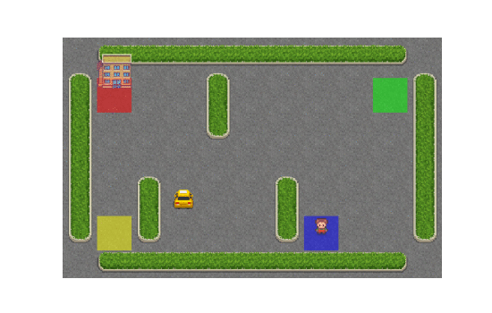
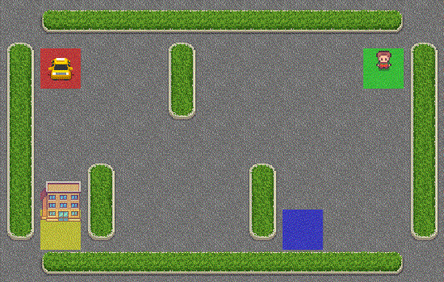
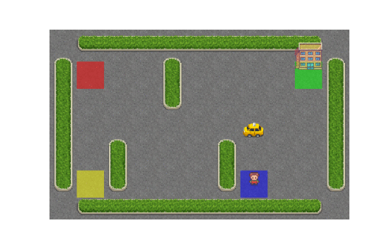
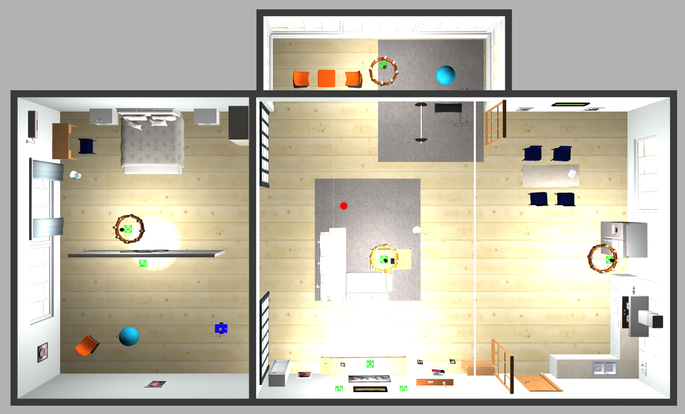
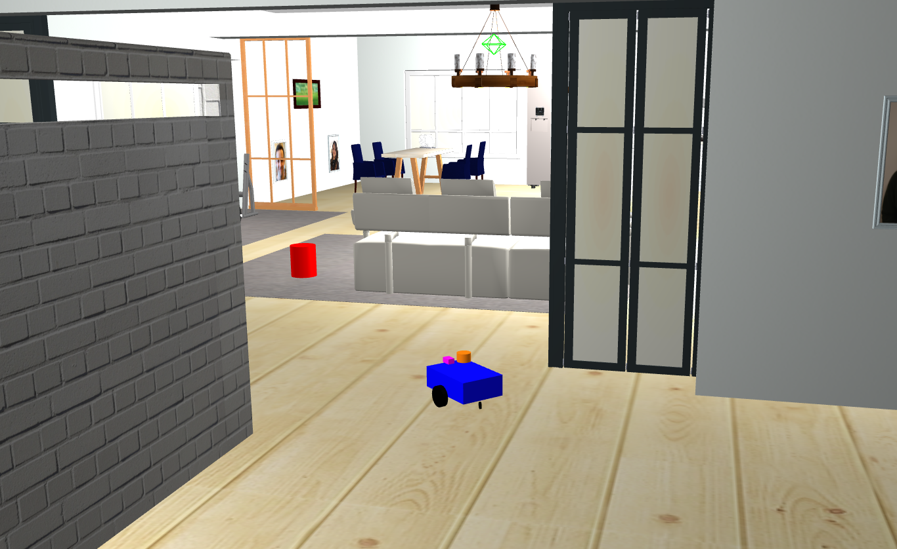
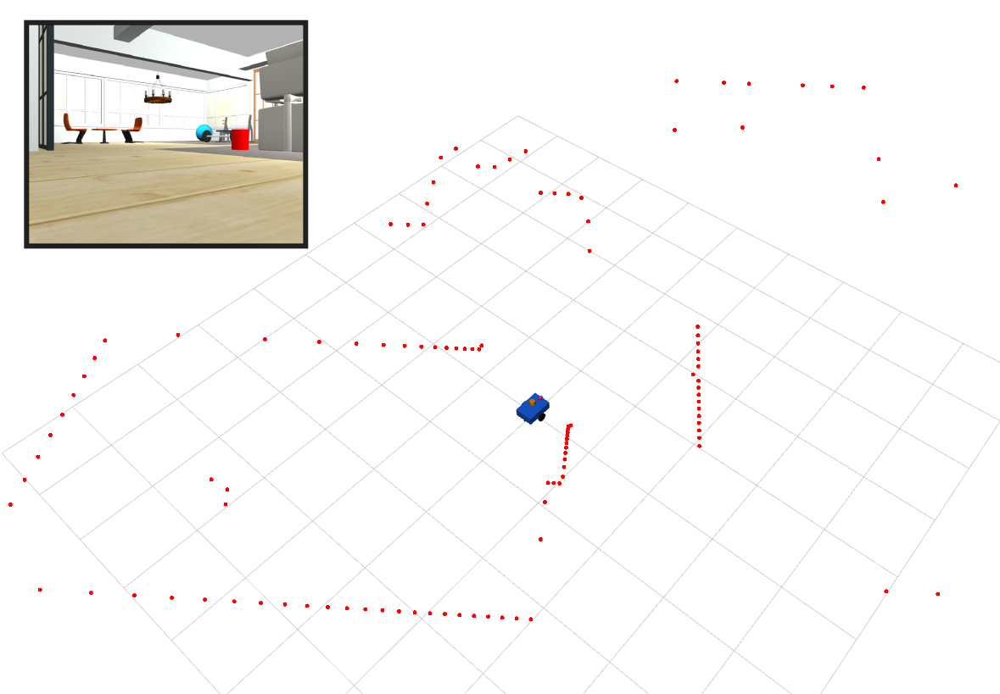


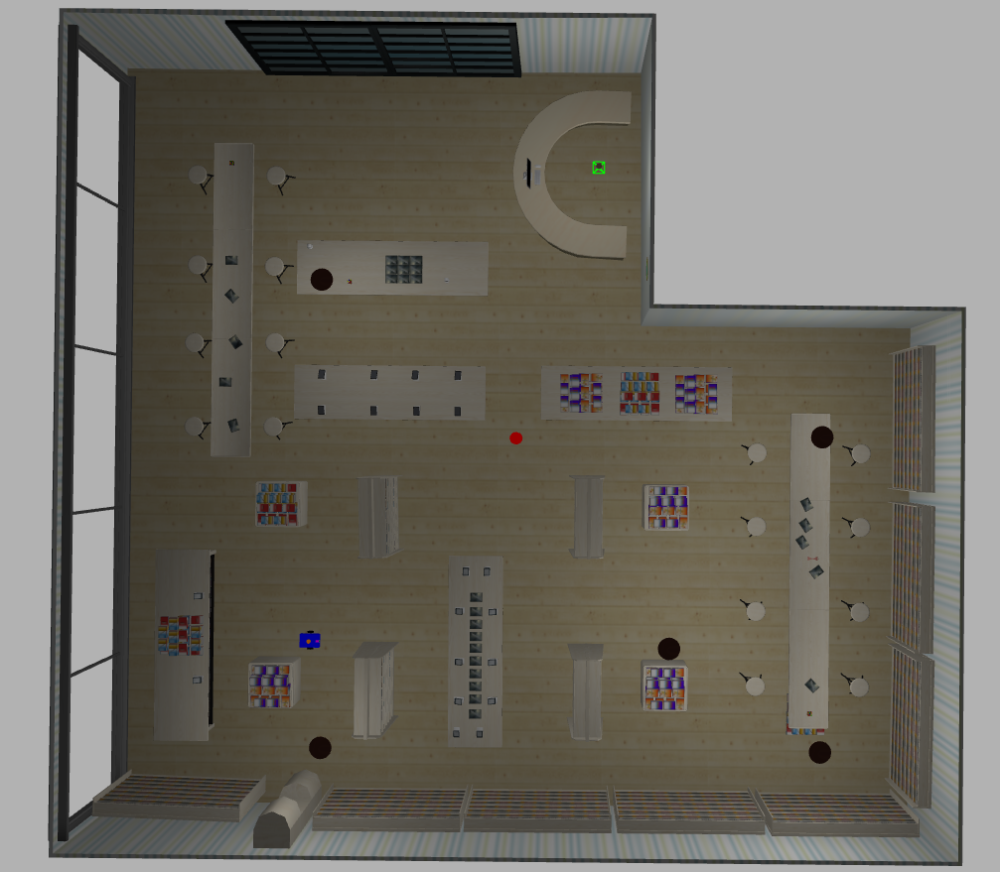
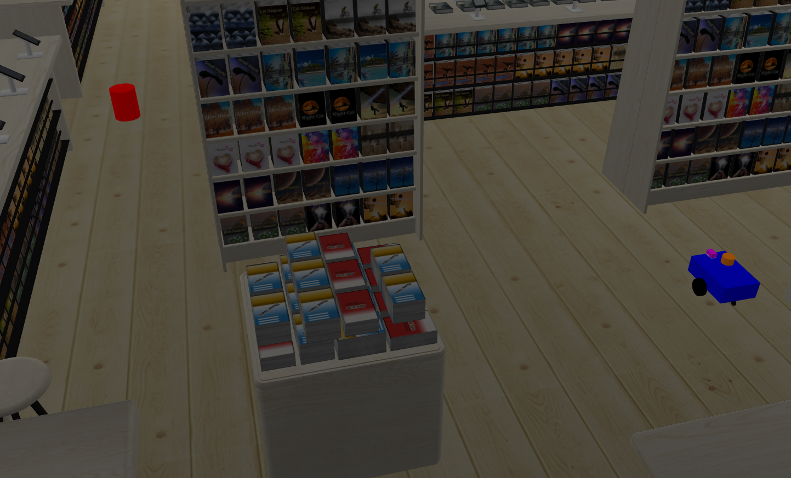
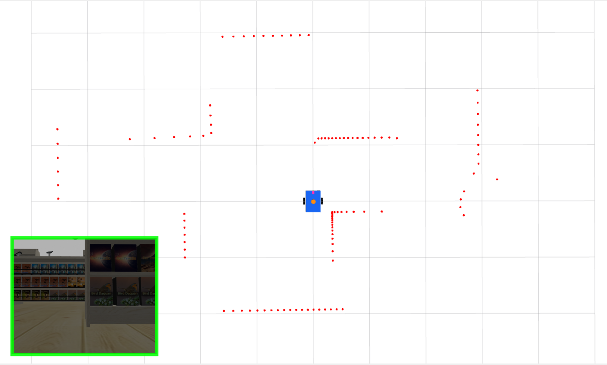
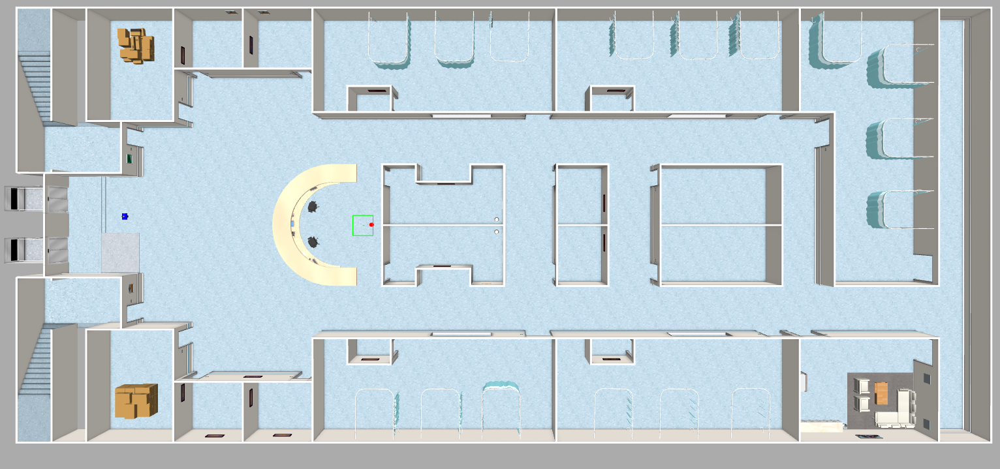
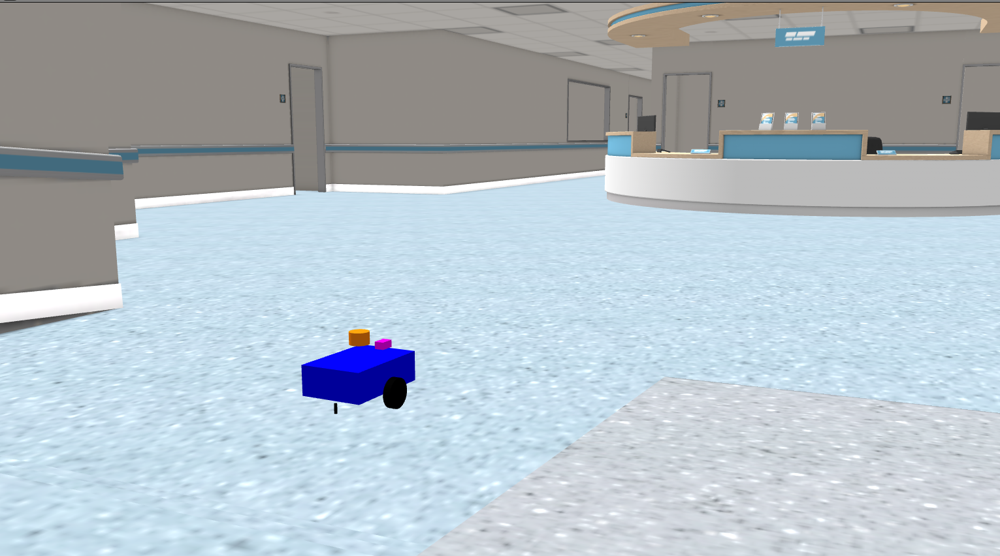
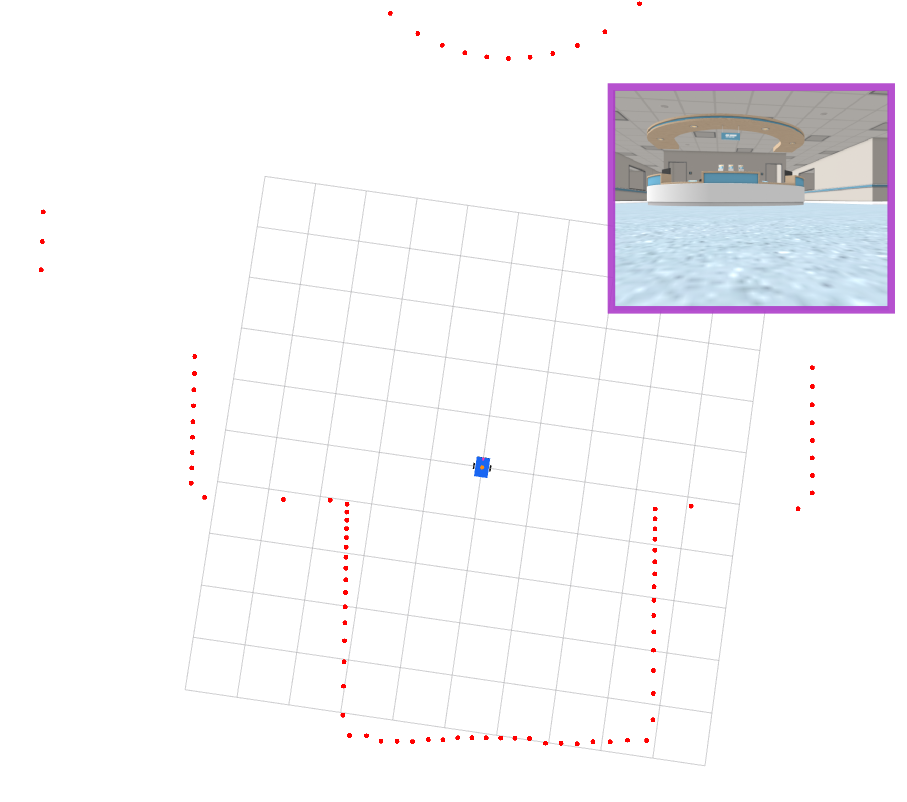
Resources
In Progress...
github.com/iag0g0mesAccess The Slides Here
In Progress...
Setup instructionsQuestions
Helpful but not mandatory. Basic ML knowledge is enough for most of the tutorial.
Yes. Slides, repository links, and selected recordings can be shared after the event.
Yes. The content is modular, so attendees can focus on the segments most relevant to them.